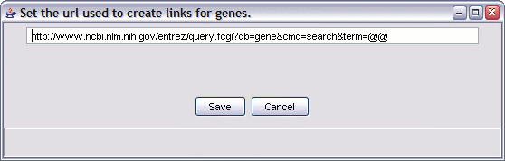

This task applies to the Gene set details view. In the details table, the gene symbols appear as hyperlinks. By default these are links to NCBI's Gene database, but you can change them to point to another web site.
Access this option by selecting the menu "Options" and choosing the "Change gene name url..." option.

The "@@" symbols are where the gene symbol gets put in. For example, if your gene is TRPA, then the link will end in TRPA; for the example above, this will cause a search to be executed on the NCBI web site for genes named "TRPA".
For other data sources, you have to know how the links (URLs) look to know what to put in this box. But here are a few examples to show the idea: